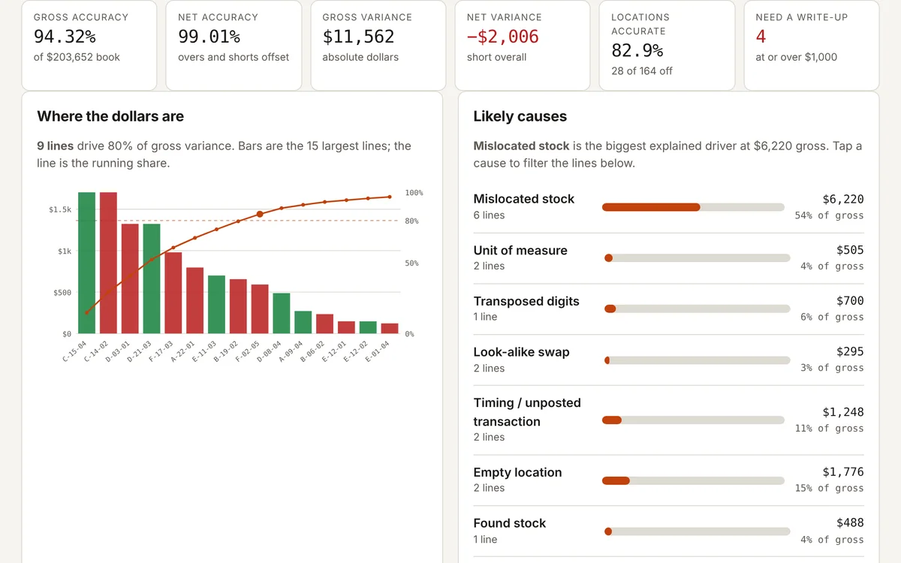

FEATURED PROJECT · INVENTORY ANALYTICS
Variance
Why is the cycle count off?
Upload a count and get gross and net accuracy, the lines driving 80% of the dollars, and the likely root cause of each variance, with a drafted audit write-up for anything over your threshold. Add last month's count to see what keeps coming back.
Skills shown: SQL aggregation · window functions · self-joins · joins across two counts · Python/pandas checked against the JavaScript engine · synthetic test cases
Open Variance ↗